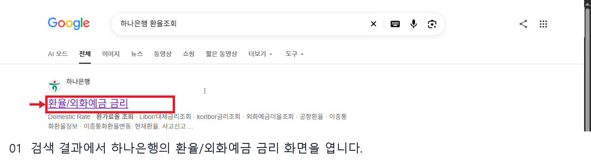
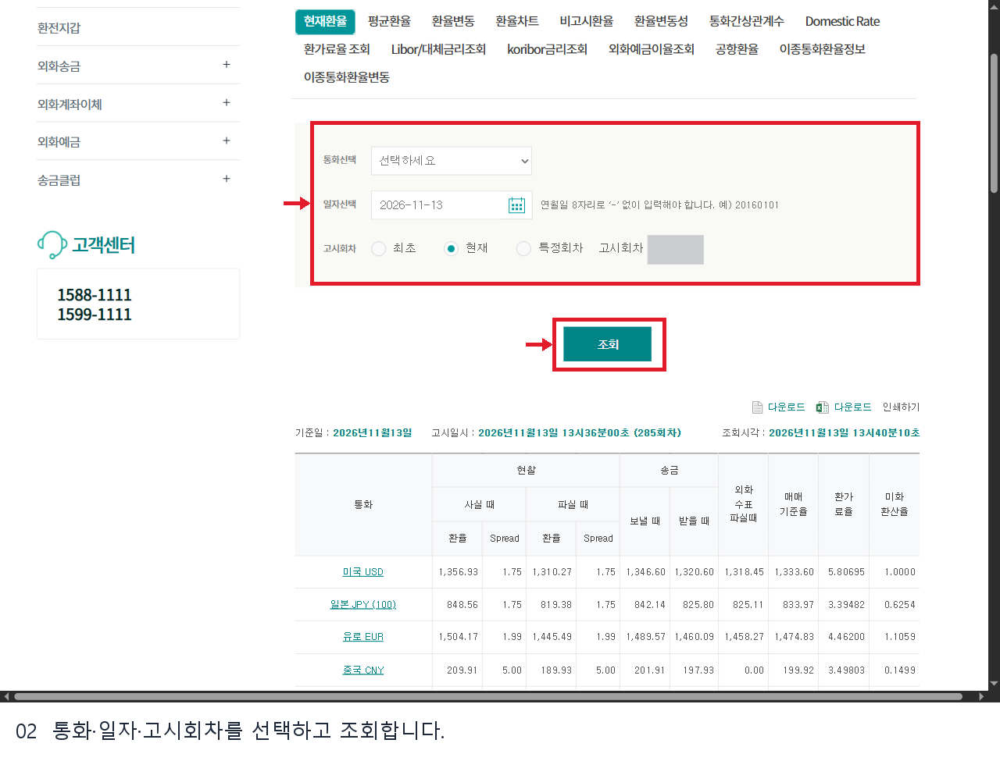
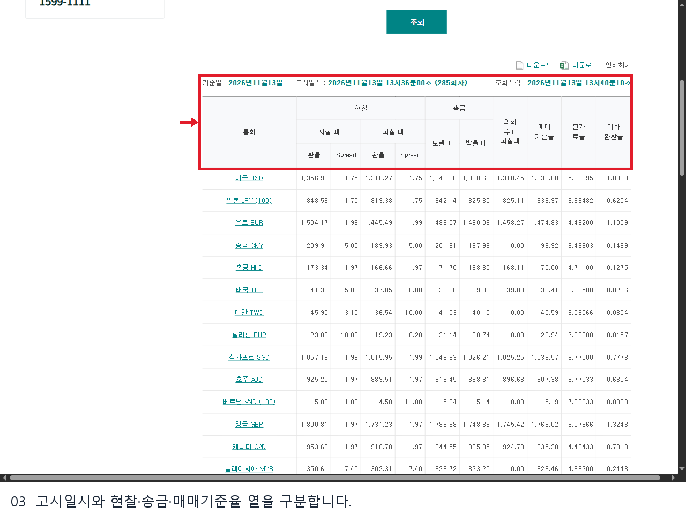
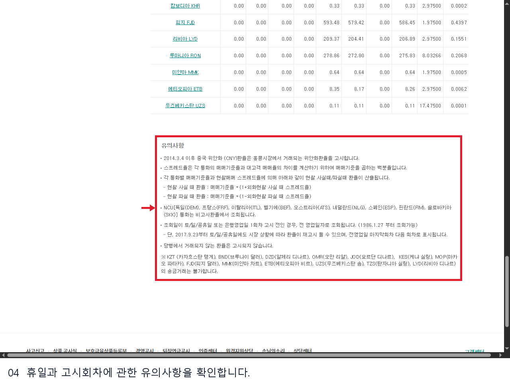

하나은행 환율조회는 통화와 날짜, 고시회차를 선택해 은행이 고시한 환율을 확인하는 방법입니다.
환전과 송금에 필요한 열이 서로 다르므로 숫자뿐 아니라 기준 시점과 거래 유형도 함께 살펴보세요.
하나은행 홈페이지에서는 외환 → 환율/외화예금 금리 → 현재환율 순서로 접근할 수 있습니다.
2026년 11월 13일 확인한 PC 공개 화면은 로그인하지 않은 상태에서 열렸습니다.
검색 결과에서 하나은행의 환율/외화예금 금리 공식 결과를 확인합니다.

검색 결과의 하나은행 공식 페이지, 2026년 11월 13일 PC 화면입니다.
공식 페이지에서 현재환율 탭을 확인합니다.
통화를 선택하고 날짜를 달력에서 고르거나 연월일 8자리로 입력합니다.
고시회차는 최초·현재·특정회차 중 목적에 맞게 고른 뒤 조회를 누릅니다.
특정 통화만으로 표가 갱신되는 동작은 확인하지 못했으므로 결과에서 원하는 통화 행을 직접 확인하세요.
아래 화면에서 통화선택, 일자선택, 고시회차와 조회 위치를 확인할 수 있습니다.

통화와 일자, 고시회차를 지정하는 PC 화면입니다.
조회 후에는 결과의 기준일과 고시일시부터 확인합니다.
| 필요한 거래 | 확인할 열 |
|---|---|
| 외화 현찰을 살 때 | 현찰 사실 때 |
| 외화 현찰을 팔 때 | 현찰 파실 때 |
| 해외로 송금할 때 | 송금 보낼 때 |
| 해외에서 송금을 받을 때 | 송금 받을 때 |
매매기준율만 실제 거래액에 그대로 적용하지 말고, 우대와 수수료 등 거래 조건이 반영된 최종 확인 화면을 살펴보세요.
일본 엔화는 표에서 JPY (100)으로 표시되므로 다른 통화와 비교할 때 기준 단위를 함께 읽어야 합니다.
결과표 상단에는 고시 정보와 현찰·송금·매매기준율 열이 나란히 표시됩니다.

고시 정보와 거래 유형별 열을 구분한 PC 화면입니다.
표의 숫자는 캡처 당시 예시이므로 현재 값은 공식 화면에서 다시 확인합니다.
과거 고시를 확인하려면 일자와 필요한 고시회차를 지정합니다.
은행 안내에 따르면 토요일·일요일·공휴일 또는 영업일 첫 고시 전에는 전 영업일자로 조회될 수 있습니다.
시장 상황에 따라 휴일에도 재고시될 수 있고, 거래되지 않는 통화는 고시되지 않을 수 있습니다.
결과표 아래 유의사항에서 휴일과 영업일 첫 고시 전의 조회 기준을 확인합니다.

휴일과 고시 기준에 관한 PC 화면입니다.
기대했던 날짜와 다르면 결과의 기준일과 회차를 함께 확인합니다.